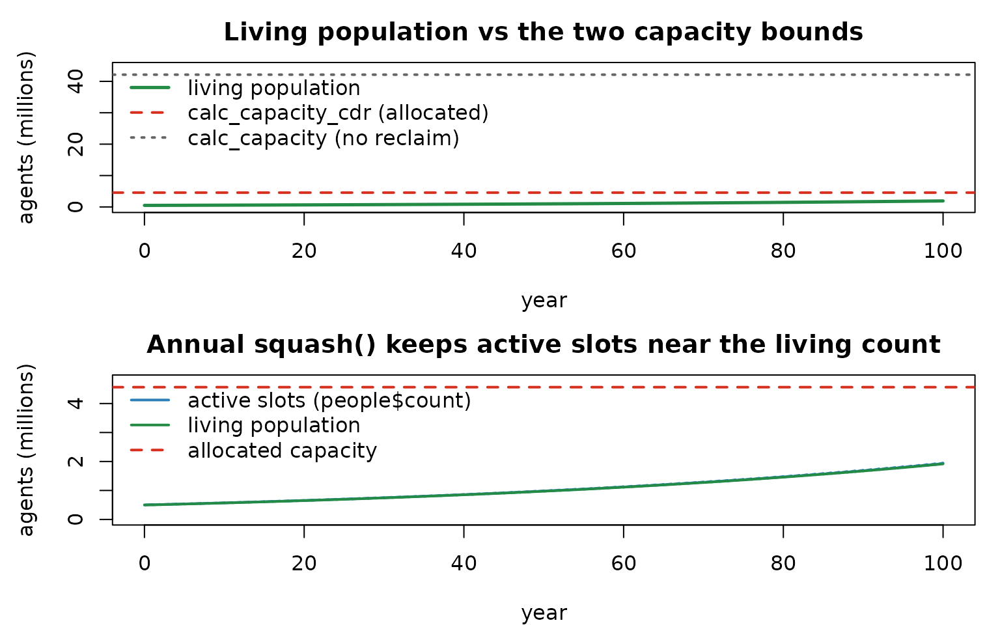

Long runs and memory: capacity and squash()
Source:vignettes/articles/long_runs_and_memory.Rmd
long_runs_and_memory.RmdCompanion to
examples/long_run_squash.R. (The run chunk simulates a century — give it ~30 seconds.)
The problem: agents accumulate
Razer is agent-based — every individual occupies a
slot in fixed-size Column arrays. A closed population is
easy: allocate exactly
slots. But once you add births, the array must hold
every agent that will ever exist. Over a century at a crude
birth rate of 30/1,000/year, that is tens of millions of slots even
though only a few million are ever alive at once. Allocating
for the cumulative total is wasteful; the fix is to reclaim the
slots of the dead and reuse them.
Two helpers bracket the choice:
-
calc_capacity(birthrates, pop)— the cumulative-births bound: how many agents are ever born (with a safety factor). Use it when you never reclaim. -
calc_capacity_cdr(birthrates, deathrates, pop)— the peak-living bound: net births minus a conservatively under-counted death rate. Use it when you reclaim dead slots periodically withsquash().
squash(people) compacts the living agents to the front
of every per-agent Column (keeping them aligned) and drops the dead,
returning the new live count — so the active count tracks the
living population instead of the cumulative total.
N0 <- 500000L; years <- 100L; nticks <- years * 365L; cbr <- 30; cdr <- 15
br <- matrix(cbr, nticks - 1L, 1L); dr <- matrix(cdr, nticks - 1L, 1L)
cap_cdr <- as.integer(calc_capacity_cdr(br, dr, N0, safety_factor = 1)) # we allocate this
cap_naive <- as.integer(min(calc_capacity(br, N0, safety_factor = 1), .Machine$integer.max))
cat(sprintf("calc_capacity_cdr (peak-living, with squash) = %s slots\n", format(cap_cdr, big.mark = ",")))## calc_capacity_cdr (peak-living, with squash) = 4,564,671 slots
cat(sprintf("calc_capacity (cumulative, no reclaim) = %s slots (%.1fx more)\n",
format(cap_naive, big.mark = ","), cap_naive / cap_cdr))## calc_capacity (cumulative, no reclaim) = 42,128,784 slots (9.2x more)A century with annual squash
No disease here (model "SI" with r0 = 0, so
nothing transmits) — just demography. Crude, age-independent mortality
is an exponential lifespan at the CDR hazard (a Kaplan–Meier table built
from an exponential survival curve). Newborns enter the maternal state
M (registered via extra_states;
run_model wanes M→S for us). The step_exit
callback runs births and mortality each tick
and squash()es once a year, recording the living and active
counts for the plots.
h_year <- -log(1 - cdr / 1000) # constant per-year hazard
km <- kaplan_meier_estimator(round((1 - exp(-h_year * (0:200))) * 1e7)) # exponential life table
mat_dur <- dist_normal(270, 20); squash_every <- 365L
track <- new.env()
track$live <- numeric(nticks); track$live[1] <- N0
track$active <- numeric(nticks); track$active[1] <- N0
m <- run_model(data.frame(population = N0), "SI", nticks = nticks, r0 = 0,
infectious_period = dist_constant(7), # unused (r0 = 0)
capacity = cap_cdr, extra_states = "M", seed = 1L,
init = function(model) {
cap <- model$people$capacity
model$people$dob <- allocate_scalar("i32", cap)
model$people$dod <- allocate_scalar("u32", cap)
model$nodes$birth_rate <- values_map(cbr / 1000 / 365, nticks, 1L)
age <- pmin(as.integer(floor(stats::rexp(N0, h_year / 365))), 90L * 365L)
model$people$dob$set(c(-age, integer(cap - N0)))
model$people$dod$set(c(as.integer(km$predict_age_at_death(age, -1L) - age),
integer(cap - N0)))
},
step_exit = function(model) {
t <- model$tick; idx <- t + 2L
b <- births(model$people$state, model$people$timer, model$people$nodeid,
model$people$dob, model$people$dod, model$people$count, 1L,
model$nodes$birth_rate, mat_dur, km, t)
model$people$count <- b$count; move_count(NULL, model$nodes$M, b$born, t)
d <- mortality(model$people$state, model$people$dod, model$people$nodeid,
model$people$count, 1L, t)
move_count(model$nodes$M, NULL, d$m, t); move_count(model$nodes$S, NULL, d$s, t)
if ((t + 1L) %% squash_every == 0L) model$people$count <- squash(model$people)
track$live[idx] <- sum(model$nodes$M$values()[idx, ], model$nodes$S$values()[idx, ])
track$active[idx] <- model$people$count
})
cat(sprintf("living %s -> %s (%.1fx growth); peak active = %s of %s capacity (%.0f%% used)\n",
format(N0, big.mark = ","), format(round(track$live[nticks]), big.mark = ","),
track$live[nticks] / N0, format(round(max(track$active)), big.mark = ","),
format(cap_cdr, big.mark = ","), 100 * max(track$active) / cap_cdr))## living 500,000 -> 1,915,754 (3.8x growth); peak active = 1,947,029 of 4,564,671 capacity (43% used)
yr <- (seq_len(nticks) - 1L) / 365
par(mfrow = c(2, 1), mar = c(4, 4.5, 2.5, 1))
plot(yr, track$live / 1e6, type = "l", lwd = 2.5, col = "#238b45", ylim = c(0, cap_naive / 1e6 * 1.05),
xlab = "year", ylab = "agents (millions)", main = "Living population vs the two capacity bounds")
abline(h = cap_cdr / 1e6, lty = 2, lwd = 2, col = "#d7301f")
abline(h = cap_naive / 1e6, lty = 3, lwd = 2, col = "grey40")
legend("topleft", c("living population", "calc_capacity_cdr (allocated)", "calc_capacity (no reclaim)"),
col = c("#238b45", "#d7301f", "grey40"), lwd = c(2.5, 2, 2), lty = c(1, 2, 3), bty = "n")
matplot(yr, cbind(active = track$active, living = track$live) / 1e6, type = "l", lty = 1, lwd = 2,
col = c("#2c7fb8", "#238b45"), ylim = c(0, cap_cdr / 1e6 * 1.05),
xlab = "year", ylab = "agents (millions)", main = "Annual squash() keeps active slots near the living count")
abline(h = cap_cdr / 1e6, lty = 2, lwd = 2, col = "#d7301f")
legend("topleft", c("active slots (people$count)", "living population", "allocated capacity"),
col = c("#2c7fb8", "#238b45", "#d7301f"), lwd = c(2, 2, 2), lty = c(1, 1, 2), bty = "n")
The living population grows steadily, and the active slot
count tracks it closely — staying well under the allocated
calc_capacity_cdr line and far below the
calc_capacity (no-reclaim) bound. That gap is the memory
squash() saves: without it you would have to allocate for
every agent ever born.
Customize and extend
-
Squash cadence. Squash less often (e.g. every 5
years) and the active count sawtooths higher between reclaims (dead
slots accumulate, then drop) — trading a little head-room for fewer
compactions. Size
capacityfor the worst-case inter-squash peak. -
Safety factor.
calc_capacity_cdr(..., safety_factor = s)credits only1/(1+s)of the deaths, so largersreserves more slack against a lower-mortality (faster-growing) realization;s = 0is the bare net-growth bound. -
Add disease. Swap
"SI", r0 = 0for a real model withincubation_period/ transmission and you have an endemic, demographically open simulation that can run for centuries within a bounded array (this is exactly what a long measles or polio run needs).